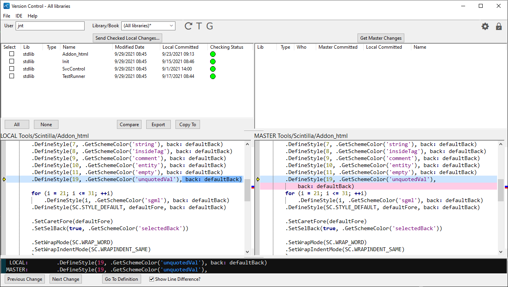

Version Control

To access Suneido's builtin Version Control, click the V in the WorkSpace toolbar. Before using the Version Control, you will need to fill the required settings. To do this open Version Control and select File > Settings, or click the Gear icon in the top right corner. The Version Control can be setup in two ways:
Standalone Ú
to run as Standalone, simply check off the standalone box. Any changes you then send through Version Control will be stored in master tables in the local database. This will allow you to track the history of your changes without need for a separate Suneido instance.
Client-Server Ú
to run with a Client-Server, you will first need to start up a separate copy of Suneido. Once you have done this, you will need to setup authorized users.
This is to protect your code base. Once you have the desired users set up, simply fill the Server, Login and Password fields accordingly.
If the connection is successful, the Gear and Lock icon should be dark gray. Additionally, the Lock icon should have a checkmark in it.
Clicking the Lock icon will display the status of your connection. If there is an issue, the icon will have an X in the center and potentially be red (depends on the error).
Features
- Conflict resolution. Conflict detected between the local record and the master record will be displayed giving the opportunity to merge and review the conflict
- Database integrity checking. By using the Compare button, you can verify a local table state against its master table. Any discrepancy will be displayed here. You can correct these discrepancies by overwriting the local record with the master record. To Overwrite a discrepancy, simply select the desired items in the Compare list. Then right-click > Overwrite.
- Status / Setting Icons. You can access your Version Control settings at any time via the Gear icon in the top right corner. Additionally, if you wish to see the status of your connection (or any potential error messages) you can click the Lock icon.
- Export. This button will export all selected items in the Local list to one file. This file can be imported into the Library View or Book Edit controls.
- Restore Items / Lines. By right-clicking a Local item, you can restore the record to its original state. Additionally, you can restore specific lines by right-clicking in the local record display and select Overwrite Highlighted Lines